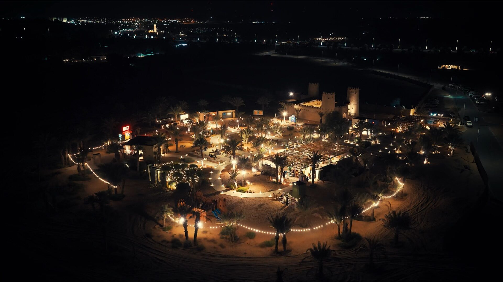
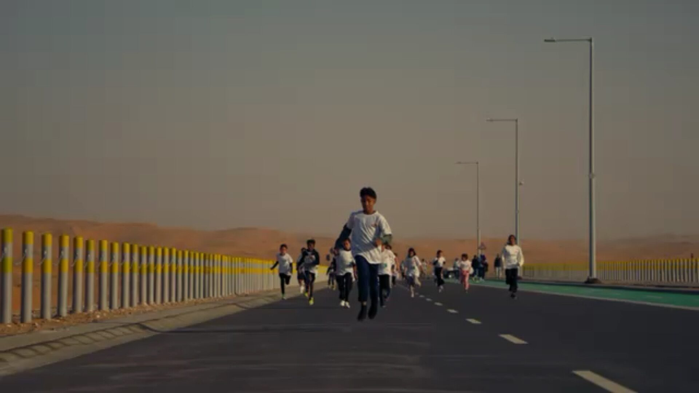
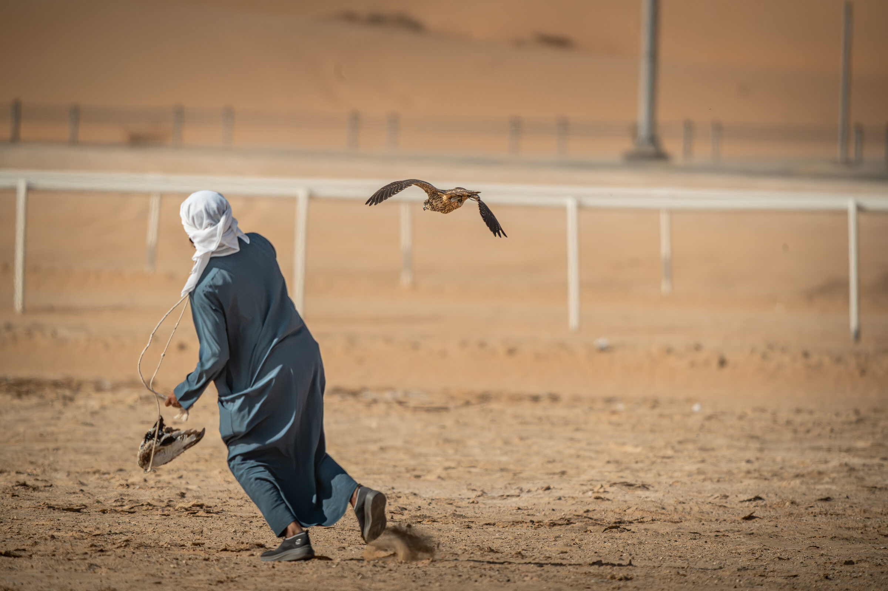
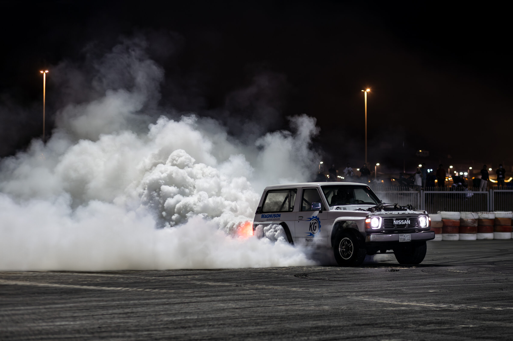
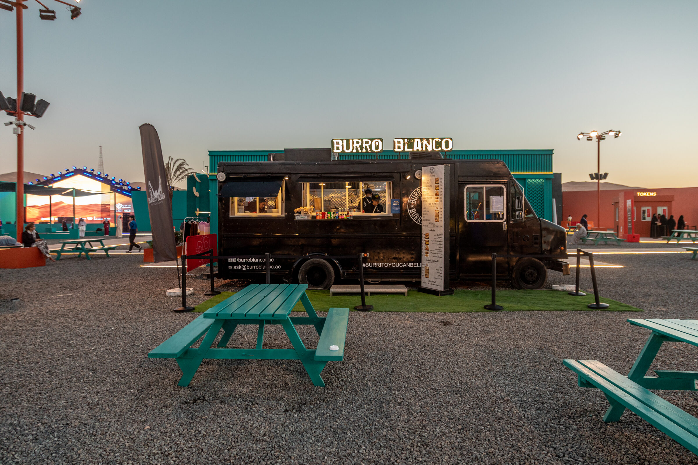
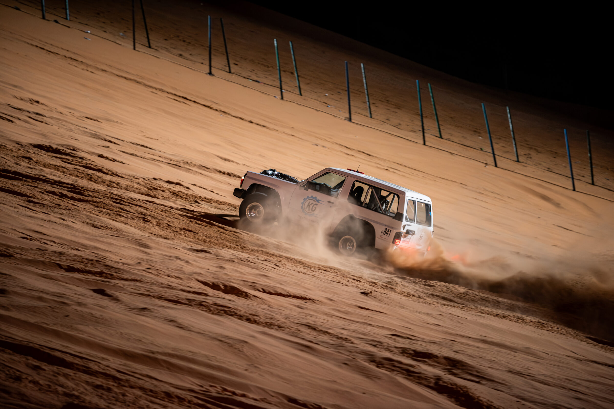

From City Lights to Desert Nights
Discover the landscape and heritage behind the festival — dune adventure, Bedouin culture, and nine centuries-old forts across the Al Dhafra region.
Wander, Explore, Experience
Choose your themed day
Family Day
A full day built for every age: the Family Day Carnival's rides and craft workshops, a junior dune-buggy building session, and shaded rest areas throughout the Family Zone. Cap the day with the season's closing fireworks finale.

Culture
Watch falconry demonstrations and traditional tug-of-war at the Heritage Village, browse the Desert Art & Culture Souq's calligraphy workshops, and walk the historic forts trail below.

Adventure
Ride the grandstand for the Dune Motocross Cup, then catch the Sandboarding Open Championship at Tal Moreeb. Add a guided dune-bashing tour at checkout for a hands-on desert experience.

Culinary
Wander the lantern-lit Culinary Nights Souq, join a hands-on Emirati cooking class, and pair it with a visit to the fine-dining outlets on our Stay & Dine directory.


A Natural Escape
Dune bashing, sandboarding, and stargazing
Beyond the festival grounds, the Al Dhafra dunes offer some of the region's most dramatic scenery — from the towering Tal Moreeb to some of the clearest night skies in the UAE. A Guided Desert Tour add-on is available at ticket checkout, covering dune bashing, sandboarding instruction, and an evening stargazing stop with a licensed local guide.
Add a Guided Tour at CheckoutLiwa's Legacy
History & culture
Al Dhafra's forts and watchtowers tell the story of the trade routes, oases, and Bedouin communities that shaped this part of Abu Dhabi long before the festival began. For deeper regional context, see the official Visit Abu Dhabi guide.
Nine historic forts & watchtowers
Select any image to open the full gallery.